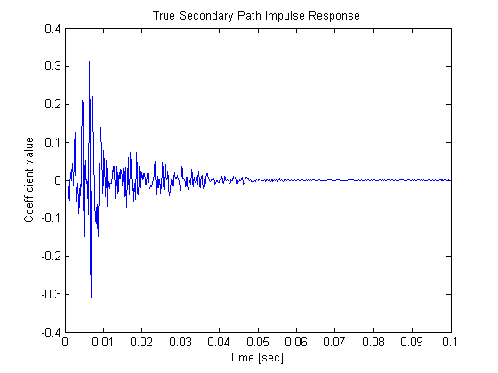
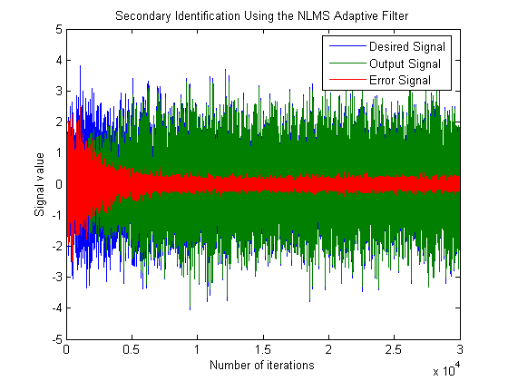
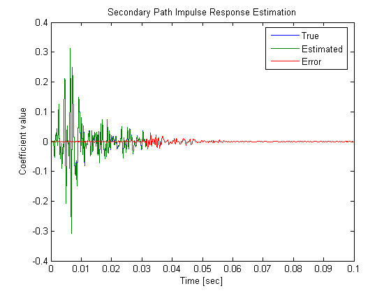
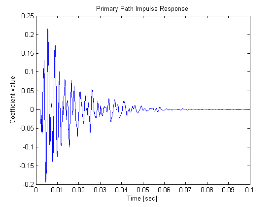
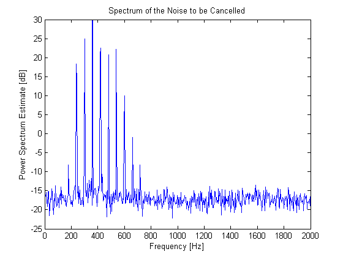
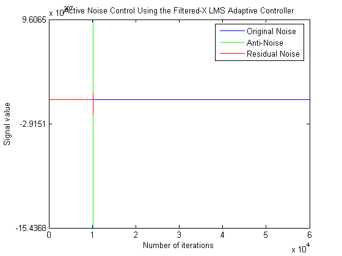

This demonstration illustrates the application of adaptive filters to the attenuation of acoustic noise via active noise control. In active noise control, one attempts to reduce the volume of an unwanted noise propagating through the air using an electro-acoustic system using measurement sensors such as microphones and output actuators such as loudspeakers. The noise signal usually comes from some device, such as a rotating machine, so that it is possible to measure the noise near its source. The goal of the active noise control system is to produce an "anti-noise" that attenuates the unwanted noise in a desired quiet region using an adaptive filter. This problem differs from traditional adaptive noise cancellation in that - The desired response signal cannot be directly measured; only the attenuated signal is available. - The active noise control system must take into account the secondary loudspeaker-to-microphone error path in its adaptation. For more implementation details on active noise control tasks, see S.M. Kuo and D.R. Morgan, "Active Noise Control Systems: Algorithms and DSP Implementations", Wiley-Interscience, New York, 1996.
Author(s): Scott C. Douglas
The secondary propagation path is the path the anti-noise takes from the output loudspeaker to the error microphone within the quiet zone. The following commands generate a loudspeaker-to-error microphone impulse response that is bandlimited to the range 160 - 2000 Hz and with a filter length of 0.1 seconds. For this active noise control task, we shall use a sampling frequency of 8000 Hz.
Fs = 8000; N = 800; delayS = 7; [B,A] = cheby2(4,20,[0.04 0.5]); Hd = dfilt.df2t(B,A); H = filter(Hd,[zeros(1,delayS) log(0.99*rand(1,N-delayS)+0.01).*sign(randn(1,N-delayS)).*exp(-0.01*(1:N-delayS))]); H = H/norm(H); t = 1/Fs:1/Fs:N/Fs; plot(t,H,'b'); xlabel('Time [sec]'); ylabel('Coefficient value'); title('True Secondary Path Impulse Response');
The first task in active noise control is to estimate the impulse response of the secondary propagation path. This step is usually performed prior to noise control using a synthetic random signal played through the output loudspeaker while the unwanted noise is not present. The following commands generate 3.75 seconds of this random noise as well as the measured signal at the error microphone.
ntrS = 30000; s = randn(1,ntrS); dS = filter(H,1,s) + 0.01*randn(1,ntrS);
Typically, the length of the secondary path filter estimate is not as long as the actual secondary path and need not be for adequate control in most cases. We shall use a secondary path filter length of 250 taps, corresponding to an impulse response length of 31 msec. While any adaptive FIR filtering algorithm could be used for this purpose, the normalized LMS algorithm is often used due to its simplicity and robustness. Plots of the output and error signals show that the algorithm converges after about 10000 iterations.
M = 250; muS = 0.1; offsetS = 0.1; h = adaptfilt.nlms(M,muS,1,offsetS); [yS,eS] = filter(h,s,dS); n = 1:ntrS; plot(n,dS,n,yS,n,eS); xlabel('Number of iterations'); ylabel('Signal value'); title('Secondary Identification Using the NLMS Adaptive Filter'); legend('Desired Signal','Output Signal','Error Signal');
How accurate is the secondary path impulse response estimate? This plot shows the coefficients of both the true and estimated path. Only the tail of the true impulse response is not estimated accurately. This residual error does not significantly harm the performance of the active noise control system during its operation in the chosen task.
Hhat = h.Coefficients; plot(t,H,t(1:M),Hhat,t,[H(1:M)-Hhat(1:M) H(M+1:N)]); xlabel('Time [sec]'); ylabel('Coefficient value'); title('Secondary Path Impulse Response Estimation'); legend('True','Estimated','Error');
The propagation path of the noise to be cancelled can also be characterized by a linear filter. The following commands generate an input-to-error microphone impulse response that is bandlimited to the range 200 - 800 Hz and has a filter length of 0.1 seconds.
delayW = 15; [B,A] = cheby2(5,20,[0.05 0.2]); Hd2 = dfilt.df2t(B,A); G = filter(Hd2,[zeros(1,delayW) log(0.99*rand(1,N-delayW)+0.01).*sign(randn(1,N-delayW)).*exp(-0.01*(1:N-delayW))]); G = G/norm(G); plot(t,G,'b'); xlabel('Time [sec]'); ylabel('Coefficient value'); title('Primary Path Impulse Response');
Typical active noise control pplications involve the sounds of rotating machinery due to their annoying characteristics. Here, we have synthetically generated 7.5 seconds of a noise that might come from a typical electric motor. Listening to its sound at the error microphone before cancellation, it has the characteristic industrial "whine" of such motors. The spectrum of the sound is also plotted.
ntrW = 60000; F0 = 60; n = 1:ntrW; A = [0.01 0.01 0.02 0.2 0.3 0.4 0.3 0.2 0.1 0.07 0.02 0.01]; x = zeros(1,ntrW); for k=1:length(A); x = x + A(k)*sin(2*pi*(F0*k/Fs*n+rand(1))); end d = filter(G,1,x) + 0.1*randn(1,ntrW); % [Pd,F] = spectrum(d(ntrW-20000:ntrW),2048,[],[],Fs); [Pd,F] = pwelch(d(ntrW-20000:ntrW),[],[],2048,Fs); plot(F,10*log10(Pd(:,1)*Fs)); axis([0 2000 -25 30]); xlabel('Frequency [Hz]'); % ylabel('Amplitude [dB]'); ylabel('Power Spectrum Estimate [dB]'); title('Spectrum of the Noise to be Cancelled'); sound(d/max(abs(d)),Fs);
The most popular adaptive algorithm for active noise control is the filtered-X LMS algorithm. This algorithm uses the secondary path estimate to calculate an output signal whose contribution at the error sensor destructively interferes with the undesired noise. The reference signal is a noisy version of the undesired sound measured near its source. We shall use a controller filter length of about 44 msec and a step size of 0.0001 for these signal statistics. The resulting algorithm converges after about 5 seconds of adaptation. Listening to the error signal, the annoying "whine" is reduced considerably.
xhat = x + 0.1*randn(1,ntrW); L = 350; muW = 0.0001; h = adaptfilt.filtxlms(L,muS,1,Hhat); [y,e] = filter(h,xhat,d); %plot(n,d,'b',n,r,'g',n,e,'r'); plot(n,d,'b',n,y,'g',n,e,'r'); xlabel('Number of iterations'); ylabel('Signal value'); title('Active Noise Control Using the Filtered-X LMS Adaptive Controller'); legend('Original Noise','Anti-Noise','Residual Noise'); sound(e/max(abs(e)),Fs);
Comparing the spectrum of the residual error signal with that of the original noise signal, we see that most of the periodic components have been attenuated considerably. The steady-state cancellation performance may not be uniform across all frequencies, however. Such is often the case for real-world systems appled to active noise control tasks.
% [Pe,F] = spectrum(e(ntrW-20000:ntrW),2048,[],[],Fs); [Pe,F] = pwelch(e(ntrW-20000:ntrW),[],[],2048,Fs); plot(F,10*log10(Pd(:,1)*Fs),'b',F,10*log10(Pe(:,1)*Fs),'r'); axis([0 2000 -25 30]); xlabel('Frequency [Hz]'); % ylabel('Amplitude [dB]'); ylabel('Power Spectrum Estimate [dB]'); title('Spectra of the Original and Attenuated Noise');
Warning: Imaginary parts of complex X and/or Y arguments ignored.